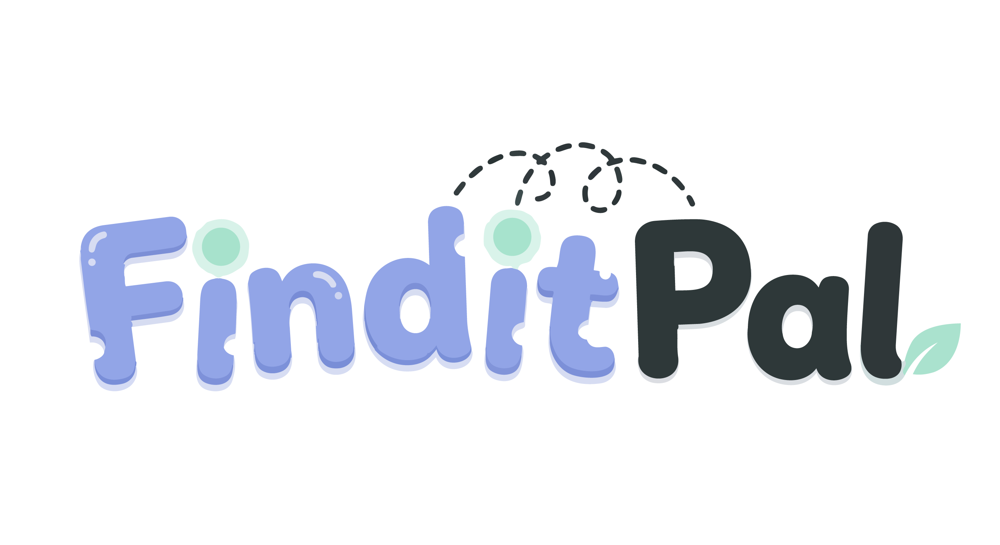
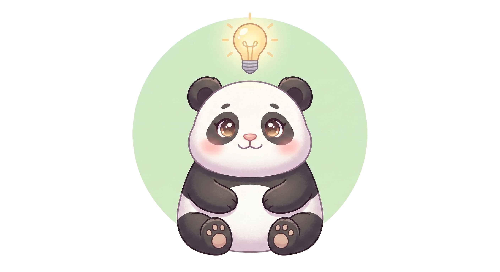
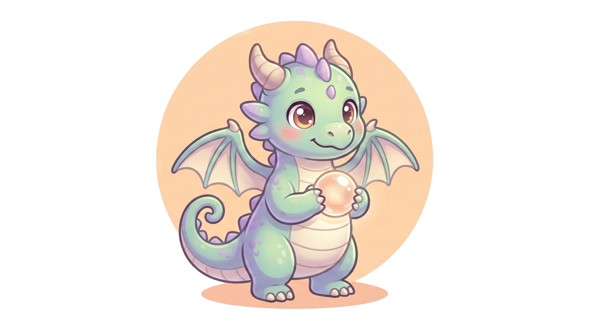
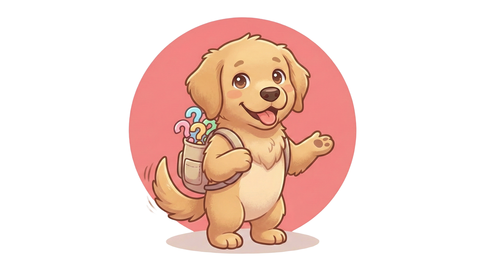
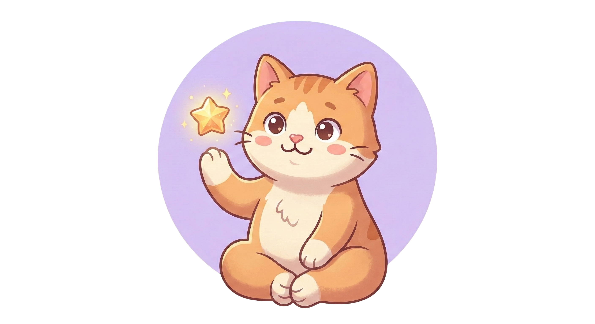
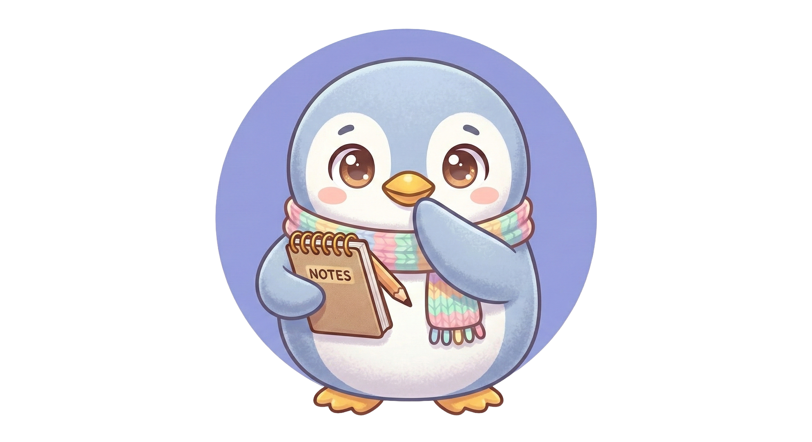
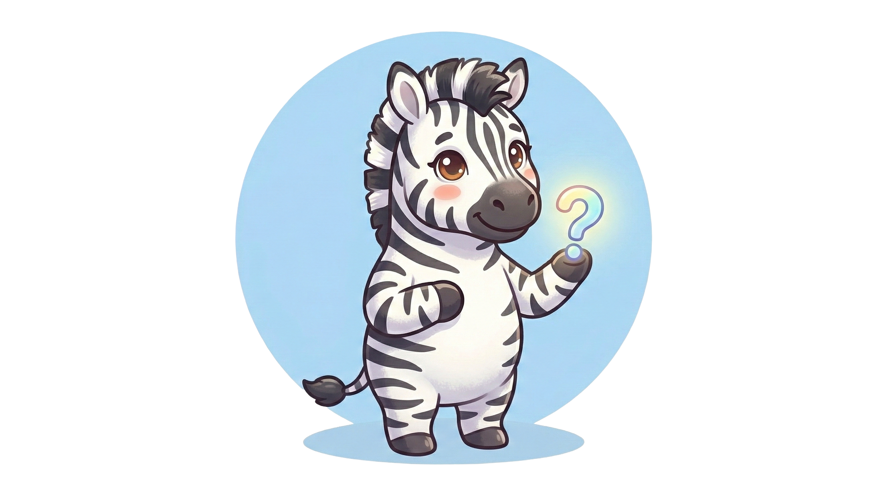
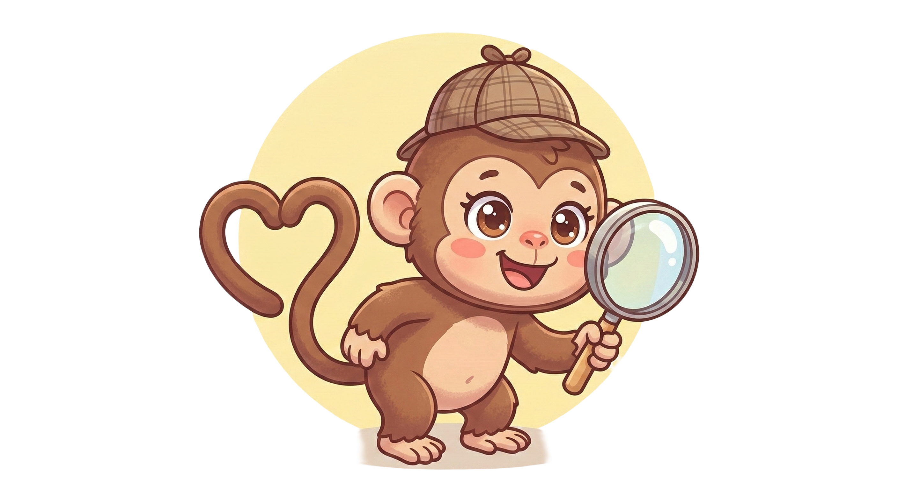

Find what's on the tip of your tongue
Your pal will use this to greet you every time.
Click one to meet them. They'll be with you every step of the way.







Everything is set to a comfortable default. Change anything that helps.
Drag the slider to change how simple or detailed the questions are.
An AI memory assistant built for everyone, especially those who need it most.
FinditPal is an AI-powered memory assistant designed from the ground up for people who struggle with keyword recall. Instead of asking you to remember the exact name of something, it asks you simple yes or no questions until it figures out what you mean.
Think of it as a patient, friendly helper sitting next to you, asking "Was it an animal? Was it big? Did it have a horn?" until the answer clicks into place.
Standard search engines require you to know what you're looking for before you start. FinditPal flips that around entirely. You don't need the right words. You just need to answer questions.
The AI behind FinditPal is Claude by Anthropic, one of the most capable and safety-focused language models available. It asks structured questions, learns from each answer, and narrows down to a result across millions of possible things, from movies to animals to countries to songs.
Search was never designed for people who can't remember the exact words.
Traditional search engines are built on one assumption: you already know what you're looking for. Type in the right words, get the right results. But what happens when you can't retrieve the words in the first place?
For people with Global Developmental Delay (GDD), cognitive processing differences, memory impairments, or learning difficulties, this gap is not just frustrating. It's a wall. GDD affects roughly 1 to 3% of the global population and significantly impacts how people retrieve, process, and communicate information.
Imagine trying to find the movie "Love Actually" but only remembering that it had the word "Love" in the title and that it was a romantic film. Searching "love movie" on Google returns hundreds of irrelevant results. There is no way to narrow it down without the exact title.
FinditPal would ask you: "Was it a romance? Was it set around Christmas? Did it have multiple storylines?" A few questions later, it finds it for you.
Designed with specific communities in mind. Open to everyone.
FinditPal was built with specific people in mind, though anyone who has ever had something stuck on the tip of their tongue will find it useful.
GDD affects language retrieval and working memory. FinditPal removes the need to produce the right keyword and replaces it with simple yes or no responses.
Standard search interfaces assume literacy, precision, and memory capacity. FinditPal assumes none of those things. It guides rather than demands.
Spelling uncertainty makes keyword search unreliable. When you can't type the word accurately, you can't find what you're looking for. FinditPal bypasses this entirely.
Over 400,000 Australians live with dementia, projected to exceed 800,000 by 2058. Age-related recall difficulty is one of the most common barriers to independent technology use.
Word retrieval under cognitive load is inconsistent with ADHD. A conversational, question-based interface reduces that load significantly.
FinditPal can be set up and used alongside a client, reducing the need for carers to guess what someone is trying to find and enabling more independent digital access.
Binary narrowing meets cognitive scaffolding.
FinditPal uses a layered binary narrowing approach, similar to how a doctor narrows a diagnosis through structured questions. Each yes or no answer eliminates roughly half the remaining possibilities, so even 8 to 10 questions can identify something from millions of options.
Is it a living thing? Is it real or fictional? Is it a person, place, or object? These early questions eliminate huge categories fast.
Is it from a movie? Did it happen in Australia? Is it something you eat? Anchors the search to a domain.
Is it big? Does it have a horn? Is it colourful? Does it make a sound? Draws on memory fragments rather than words.
Does it live in Africa? Was it made before 2000? Is it grey? By this point, usually only a handful of possibilities remain.
Questions can be adjusted from fully detailed ("Was this animal found primarily in sub-Saharan Africa?") all the way down to a single word ("Africa?"). The simplicity slider in settings lets each user find their own comfortable level.
Accessibility is not a feature here. It is the entire product.
Every design decision in FinditPal was made with accessibility in mind first. Below is every commitment we have shipped, with more on the way.
Scales from 14px to 26px using a slider in settings. Affects all text across the entire app, not just one section.
Buttons can be set to Normal, Large, or Extra Large to support users with reduced fine motor precision or motor impairments.
Four SVG-based correction filters: Protanopia (red-blind), Deuteranopia (green-blind), Tritanopia (blue-yellow), and Achromatopsia (full greyscale). Applied across the entire page instantly.
Carefully chosen palette using Deep Midnight (#1A1D23) and Soft Cloud (#E2E8F0) to maintain WCAG AA contrast ratios throughout.
Questions can be reduced to single words for users who need minimal text. Designed in consultation with cognitive load research in special education.
A friendly animated companion reduces anxiety, creates emotional warmth, and frames the experience as a game rather than a test. Six mascots to personalise the experience.
Full voice input and text-to-speech output for users who find typing difficult, painful, or inaccessible. Button is already in the UI, functionality arriving in the next release.
FinditPal is actively growing. Here's what's coming.
FinditPal started as a university project at the University of Canberra. It has real-world application potential in disability support, aged care, education, and consumer accessibility. Here's the roadmap.
Powered by Claude (Anthropic). Structured binary narrowing across 16+ categories.
Name, mascot, font size, button size, dark mode, colour blindness filters, and simplicity slider.
Persistent local log of previously found results, swipeable and individually deletable.
Hands-free operation for users who find typing inaccessible. The button is already in the UI.
Users describe a colour, shape, or visual they remember and FinditPal factors that into its questioning.
Monitor search history, set category defaults, and configure accessibility settings on behalf of a user.
FinditPal as a tool within registered disability support organisations, embedded in care plans.
Bring FinditPal's questioning into any website, not just this one. Right-click and ask FinditPal to help find something.
Local model support for low-connectivity environments, shared care tablets, and regional disability services.
We're a small team and we actually read our messages.
FinditPal is built by a small team of software engineering students at the University of Canberra with a genuine interest in making technology more inclusive. We are always open to feedback, partnership enquiries, or just a conversation about accessible design.
Your lived experience is the most valuable feedback we can get. If something doesn't work for you, that's a bug we need to fix.
We're open to partnerships, pilots, and integration conversations. FinditPal has real potential as a support tool in formal care settings.
If you work in accessibility tech, cognitive science, speech pathology, or special education, we'd love to connect.
FinditPal is open source and we welcome contributions, especially from people with accessibility expertise.